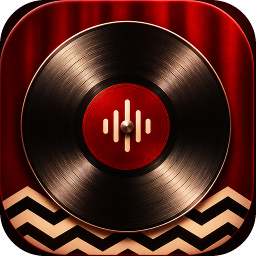

Un reproductor de música FLAC para Android, hecho para los que escuchan de verdad. Tus discos, girando, tal como fueron grabados.
Las apps de streaming comprimen la música, la llenan de anuncios y te empujan a saltar canciones. STALKER va al revés: pones un disco, el vinilo empieza a girar, la aguja baja y el álbum suena entero, en el orden en que el artista lo pensó.
Lee tus archivos FLAC con sus bits y su frecuencia reales. Con unos audífonos o un DAC por USB-C en Android 14 o superior, la señal puede llegar bit-perfect: sin que el teléfono la toque.
Y todo pasa en una sala de telones rojos y piso en zigzag, con la calma de quien se sienta a escuchar.
Sin suscripciones ni funciones bloqueadas. Todo está incluido desde el primer día.
Muestra los bits y la frecuencia reales de cada archivo. Hasta 24 bit, sin recortar a 16.
Con un DAC o audífonos USB-C en Android 14+, la música llega sin pasar por el mezclador del teléfono.
A 33⅓ rpm, con brazo que baja al disco y avanza con la canción. Gíralo con el dedo para adelantar.
Junta canciones en tus propios vinilos, con Lado A y Lado B. Guarda tus álbumes favoritos.
Compra en Bandcamp o Qobuz sin salir de la app. Las descargas siguen mientras escuchas y los .zip se abren solos.
Si tus FLAC traen la letra, la ves línea por línea y puedes saltar a cualquier parte.
La sala en oscuro y un temporizador que apaga la música suave, o al terminar el disco.
Presets para cada estilo y volumen parejo entre discos, que se apagan solos en bit-perfect.
Si la música sale por Bluetooth, STALKER te avisa de que se está comprimiendo y no suena en FLAC.
STALKER no se financia con tus datos ni con tu atención. Es un proyecto personal, de código abierto, hecho por alguien a quien le importa cómo suena la música.
Toca "Descargar gratis" desde tu celular Android. Se baja un archivo llamado Stalker.apk.
Ábrelo. Si Android lo pide, permite "instalar apps desconocidas" para tu navegador. Es normal en apps que no vienen de Play Store.
Abre STALKER, dale permiso para leer tu música y elige un álbum. Encuentra sola los FLAC de todo el teléfono.
Sí, si lo bajas desde este enlace. El código está publicado completo en GitHub para que cualquiera pueda revisarlo, y cada versión se compila de forma automática desde ese código. Play Protect puede mostrar un aviso la primera vez porque la app no viene de la tienda.
Android 14 o superior y unos audífonos o un DAC conectados por USB-C. Si el fabricante de tu teléfono no lo permite, STALKER usa el modo Hi-Res: el DAC trabaja a la frecuencia original de cada canción, sin remuestreo.
Funciona, pero el Bluetooth comprime el audio, así que ya no es calidad FLAC. STALKER te lo indica en pantalla para que sepas qué estás escuchando.
En tiendas como Bandcamp o Qobuz, que venden descargas en FLAC, o en el Live Music Archive, con conciertos gratis y legales. Todas se abren desde la Tienda dentro de la app.
STALKER revisa al abrirse si hay una versión nueva y te ofrece descargarla. Se instala encima sin perder tus discos ni tus favoritos.
No. Tu música, tus discos y tus estadísticas se quedan en tu teléfono. La app solo se conecta a internet para revisar si hay una versión nueva y cuando usas la Tienda.